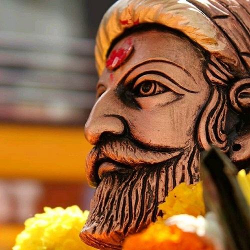

Shivaji was born in the hill-fort of Shivneri, near the city of Junnar in what is now Pune district. Scholars disagree on his date of birth. The Government of Maharashtra lists 19 February as a holiday commemorating Shivaji's birth (Shivaji Jayanti).[a][16][17] Shivaji was named after a local deity, the goddess Shivai.[18] Shivaji's father Shahaji Bhonsle was a Maratha general who served the Deccan Sultanates.[19] His mother was Jijabai, the daughter of Lakhuji Jadhavrao of Sindhkhed, a Mughal-aligned sardar claiming descent from a Yadav royal family of Devagiri.[20][21] At the time of Shivaji's birth, power in Deccan was shared by three Islamic sultanates: Bijapur, Ahmednagar, and Golkonda. Shahaji often changed his loyalty between the Nizamshahi of Ahmadnagar, the Adilshah of Bijapur and the Mughals, but always kept his jagir (fiefdom) at Pune and his small army.[19]
Shivaji was devoted to his mother Jijabai, who was deeply religious. His studies of the Hindu epics, the Ramayana and the Mahabharata, also influenced his lifelong defence of Hindu values.[22] He was deeply interested in religious teachings, and regularly sought the company of Hindu saints.[23] Shahaji, meanwhile had married a second wife, Tuka Bai from the Mohite family. Having made peace with the Mughals, ceding them six forts, he went to serve the Sultanate of Bijapur. He moved Shivaji and Jijabai from Shivneri to Pune and left them in the care of his jagir administrator, Dadoji Konddeo, who has been credited with overseeing the education and training of young Shivaji.
Many of Shivaji's comrades, and later a number of his soldiers, came from the Maval region, including Yesaji Kank, Suryaji Kakade, Baji Pasalkar, Baji Prabhu Deshpande and Tanaji Malusare.[25] Shivaji traveled the hills and forests of the Sahyadri range with his Maval friends, gaining skills and familiarity with the land that would prove useful in his military career.[26] Shivaji's independent spirit and his association with the Maval youths did not sit well with Dadoji, who complained without success to Shahaji.
In 1639, Shahaji was stationed at Bangalore, which was conquered from the Nayaks who had taken control after the demise of the Vijayanagara Empire. He was asked to hold and settle the area.[28] Shivaji was taken to Bangalore where he, his elder brother Sambhaji, and his half brother Ekoji I were further formally trained. He married Saibai from the prominent Nimbalkar family in 1640.[29] As early as 1645, the teenage Shivaji expressed his concept for Hindavi Swarajya (Indian self-rule), in a letter.